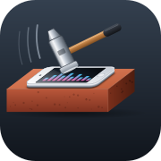

devthedev's Repo
Home of AmpEQ for the iPod touch 7.
Add to Sileo Add to ZebraOr add this source manually:
https://devincorumisok.github.io/repo/

Home of AmpEQ for the iPod touch 7.
Add to Sileo Add to ZebraOr add this source manually:
https://devincorumisok.github.io/repo/